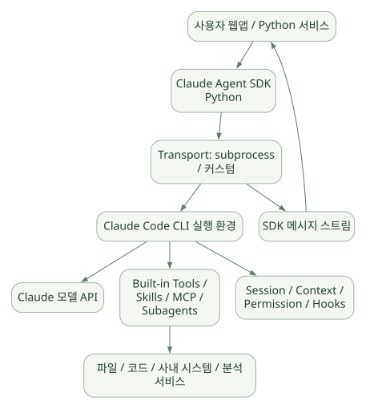

큰 그림 / 단원 01
실행 환경을 재사용한다는 의미
모델 API·CLI·Agent SDK·Harness의 역할 나누기
먼저 연결해 보기
모델 응답만 받는 API 호출과, 이미 파일·도구·Context를 다루는 실행 환경을 앱에서 호출하는 것은 다릅니다. Claude Agent SDK는 Claude Code의 실행 기능을 제어하는 방식으로 이해하면 출발점이 명확해집니다.
작은 예제에서도 별도 CLI 프로세스와 작업 디렉터리, 권한과 세션의 운영 조건을 고려해야 합니다. 아래 설치·호출 코드는 원문의 미실행 예시이며, SDK와 함께 번들 CLI 버전도 확인해야 합니다.
읽는 관점Python 코드에서 직접 실행하는 부분과 CLI에 요청하는 부분을 구분하세요.
1. 한눈에 보는 핵심 요약#
1.1 한 문장 정의#
Claude Agent SDK는 Claude Code의 Agent Loop·도구 실행·컨텍스트 관리 기능을 Python 또는 TypeScript 애플리케이션에서 프로그래밍 방식으로 이용하게 하는 SDK다. 공식: [D01], [D02]
쉽게 말해 Claude API에 프롬프트만 전달해 답을 받아오는 라이브러리가 아니다. 이미 도구를 사용하며 반복 작업을 수행하는 Claude Code 실행 환경을 앱 안에서 제어하는 방식이다.
1.2 30초 예시#
사용자: “이 디렉터리의 데이터 파일을 조사하고 이상 징후를 설명해.”
- SDK가 사용자의 요청과 설정을 Claude Code 런타임에 전달한다.
- Claude가 파일 목록 확인, 파일 읽기, 코드 실행 등 가능한 행동을 결정한다.
- 런타임이 해당 도구 사용 권한을 확인하고 도구를 실행한다.
- 도구 결과를 Claude에게 다시 제공한다.
- Claude가 추가 분석 여부를 판단하여 도구 호출을 반복한다.
- 최종 결과·세션 ID·사용량/비용 등 실행 결과가 SDK 메시지로 전달된다.
구분할 것: 위의 2~5단계 Agent Loop는 Claude Code 런타임의 기능이다. Python SDK가 직접 모든 Tool 선택 로직을 구현하지는 않는다. 공식: [D02]; 소스: [C01]–[C05]
1.3 Claude Agent SDK의 핵심 특징#
| 핵심 | 의미 | 왜 중요한가 |
|---|---|---|
| 완성형 실행 루프 활용 | 모델 호출 → 도구 실행 → 결과 재입력 반복 구조 제공 | 작은 규모의 사용자 코드로 자율형 작업 구축 |
| 풍부한 기본 도구 | 파일·코드·검색 등의 환경 조작 기능 | 분석/개발형 작업에 즉시 활용 가능 |
| CLI 실행 기반 | Python SDK가 Claude Code 프로세스를 호출 | 순수 Python 내장 Runner와 다른 운영·보안 특성 |
| 설정·권한 정책 | permission mode, deny/ask/allow, 승인 콜백 | 도구 실행과 사용자 승인 경계 |
| Hooks | 실행 이벤트 전후에 코드 삽입 | 검증, 차단, 로깅, 감사 |
| Sessions | 기록·재개·분기 | 연속 업무와 문제 추적 |
| Skills·Subagents | 절차 재사용, 역할 분담 | 도메인 작업의 조직화 |
| MCP | 외부 도구와 데이터 소스 연결 | 사내 API/DB를 통제된 인터페이스로 제공 |
| 한계 | Claude Code/Claude 모델 생태계와 결합 | 로컬 LLM·다른 벤더 교체의 자유도 확인 필요 |
1.4 처음부터 알아야 할 다섯 가지#
- SDK와 Agent Loop의 구현 위치는 다르다.
allowed_tools는 ‘허용한 도구만 사용 가능’이라는 뜻이 아니다. 자동 승인 규칙이므로 실제 도구 표면 제한은tools,disallowed_tools, 정책과 함께 설계해야 한다. [D06]can_use_tool은 모든 Tool 호출을 검사하지 않는다. 앞 단계에서 자동 승인된 호출은 콜백에 오지 않으므로 전수 검사 용도로는PreToolUse및 실제 Tool 서버의 권한 통제가 중요하다. [D06]- Session과 장기 도메인 Memory/RAG는 동일하지 않다. Session은 우선 대화·도구 실행 이력이다. [D08]
- Structured Output은 형식 통제이지 사실 검증이 아니다. [D16]
2. LLM API·Claude Code·SDK·Harness의 관계#
2.1 기본 용어#
| 용어 | 쉬운 설명 | Claude 생태계에서의 예시 |
|---|---|---|
| LLM / Foundation Model | 텍스트·코드 등을 생성하는 모델 | Claude 모델 |
| Model API / Client SDK | 모델에 요청을 보내고 응답을 받는 통신 라이브러리 | Anthropic API 및 Python Client SDK |
| Tool | 파일 읽기·명령 실행·검색·API 호출 같은 외부 행동 | Read, Bash, MCP Tool |
| Agent Loop | 판단 → 도구 사용 → 재판단을 반복하는 실행 구조 | Claude Code의 Agent Loop |
| Agent Harness | 모델을 둘러싼 도구·상태·권한·실행 환경 | Claude Code 기반 실행 구성 |
| Agent SDK | 이 실행 기능을 앱에서 호출·설정하는 인터페이스 | Claude Agent SDK |
2.2 계층 관계#
넓은 도식은 가로로 이동하며 읽을 수 있습니다. 도식 크게 보기 ↗

원문에 수록된 학습용 도식입니다. 노드·화살표·분기 라벨을 보존해 다시 배치했습니다. 세부 조건과 예시·구현의 구분은 앞뒤 본문을 함께 읽으세요.
도식 원문 보기 (Mermaid)
flowchart TB
A[사용자 웹앱 / Python 서비스] --> B[Claude Agent SDK Python]
B --> C[Transport: subprocess / 커스텀]
C --> D[Claude Code CLI 실행 환경]
D --> E[Claude 모델 API]
D --> F[Built-in Tools / Skills / MCP / Subagents]
F --> G[파일 / 코드 / 사내 시스템 / 분석 서비스]
D --> H[Session / Context / Permission / Hooks]
C --> I[SDK 메시지 스트림]
I --> A- 모델이 자율적으로 다음 행동을 판단하는 부분과 도구 실행 정책을 집행하는 부분은 Claude Code 런타임의 책임이다. [D02]
- Python SDK의 직접 책임은 입력 설정 직렬화, CLI 프로세스와의 통신, 출력 메시지 파싱, 콜백/제어 프로토콜, SDK MCP 및 세션 저장 어댑터 등이다. [C01]–[C07]
- 전체를 “OpenAI Agents SDK와 완전히 동일한 Python Runner 구조”로 생각하면 오해가 생긴다.
2.3 다른 것들과 혼동하지 말 것#
- Claude Chat: 일반 사용자에게 제공되는 채팅 서비스.
- Claude Code CLI: 개발자용 실행 환경. 파일·명령·도구 사용 등의 Agent 행동을 담당.
- Claude Agent SDK: Claude Code 실행 기능을 프로그램에 결합하기 위한 Python/TypeScript 인터페이스.
- Anthropic Client SDK: Claude 모델 API 직접 호출용. Agent Loop나 Claude Code 도구 실행을 자동으로 모두 제공하는 것은 아님.
- Hermes: 비교 가능한 자율형 Agent이지만 공개 구현·기본 도구·모델 연동 방식이 다름.
3. 등장 배경과 설계 철학#
3.1 왜 별도 Agent SDK인가?#
모델 API만 사용해 파일 분석 Agent를 만들면 개발자가 프롬프트 조립, Tool 호출 목록, 실행 정책, 반복 조건, 컨텍스트 초과, 오류, 스트리밍, 로그 등을 직접 연결해야 한다. Agent SDK는 Claude Code에서 축적된 실행 기능을 재사용한다. [D01], [D02]
3.2 핵심 설계 철학#
- 실행 가능한 환경을 제공한다: 채팅 응답뿐 아니라 파일·코드·명령·연결된 API와 상호작용.
- 모델이 다음 행동을 선택한다: 고정 워크플로와 달리 다음 Tool 순서가 항상 미리 정해져 있지는 않다.
- 사람과 정책이 행동을 제한한다: permission mode, allow/deny, hook, sandbox 등의 계층 적용.
- 설정 파일과 코드 설정을 함께 활용한다:
.claude/,CLAUDE.md, Skills, Plugins 및 SDK Options. - 세션의 연속성을 제공한다: 이전 탐색과 도구 결과를 기억하며 이어서 작업.
3.3 특히 잘 맞는 업무와 덜 맞는 업무#
상대적으로 잘 맞는 업무: 코드베이스 탐색·수정, 파일 기반 탐색/분석, 여러 도구를 오가며 조사, 로그 분석, 작업 계획 및 실행.
별도 검토가 필요한 업무: 마이크로초급 실시간 제어, 엄격한 결정적 실행, 복잡한 SQL 정책·조직별 RBAC, 완전한 모델 독립성, 온라인 모델 호출 불가 폐쇄망, 생산 설비 직접 제어. 이는 ‘불가능’ 단정이 아니라 기본 기능만으로 충분하다고 가정하면 안 되는 영역이다. [설계]
4. 설치·인증·개발 환경과 최소 예제#
4.1 기본 설치#
python -m venv .venv
source .venv/bin/activate # Linux/macOS; Windows PowerShell은 .\.venv\Scripts\Activate.ps1
python -m pip install 'claude-agent-sdk==0.2.174'- 공식 Python 패키지는 Python 3.10 이상을 요구한다. [C00]
- 해당 Python 패키지는 Claude Code CLI 실행 파일을 번들하므로 보통 별도 CLI 설치가 필수는 아니다. [C00], [D02]
- 설정한 실행 바이너리가 다르면 환경·동작 차이가 날 수 있다. 재현성을 위해 SDK 및 CLI 버전을 함께 기록한다.
- 인증·과금은 공식 지원 방식과 조직의 정책을 따라야 한다. 제3자 제품에서 개인용 claude.ai 로그인을 재사용하는 방식은 공식 이용 조건 및 허용 범위를 확인해야 한다. [D01]
4.2 가장 간단한 사용 예제#
import asyncio
from claude_agent_sdk import query, ClaudeAgentOptions, ResultMessage
async def main():
options = ClaudeAgentOptions(
cwd="/path/to/safe_workspace",
max_turns=6,
max_budget_usd=1.0,
disallowed_tools=["Write", "Edit"],
)
async for message in query(prompt="이 디렉터리의 파일 종류를 요약해 줘", options=options):
if isinstance(message, ResultMessage):
print("subtype:", message.subtype)
print("result:", message.result)
print("session:", message.session_id)
asyncio.run(main())주의: 개념을 설명하기 위한 공식 API 형태 예제이며 실행하지 않았다. disallowed_tools에 Write/Edit를 넣는 것만으로 Bash 명령을 통한 쓰기까지 모두 차단된다고 가정하면 안 된다. 정확한 읽기 전용 환경에는 파일시스템·컨테이너·MCP 서버의 권한도 필요하다. [D06], [D19]
4.3 개발 시 최소 준비물#
- Python 버전·패키지 버전·번들 CLI 버전 확인.
- 적법한 API 인증/기업 계정 및 네트워크 경로 확인.
- 작업 디렉터리(
cwd)와 읽을 수 있는 데이터/파일 범위 명시. - 모델 사용 비용·실행 시간·도구별 위험 정의.
- 로그·세션에 기밀 정보가 저장되는지 검토.
- 시작은 공개·합성 데이터와 읽기 전용 환경으로 제한.